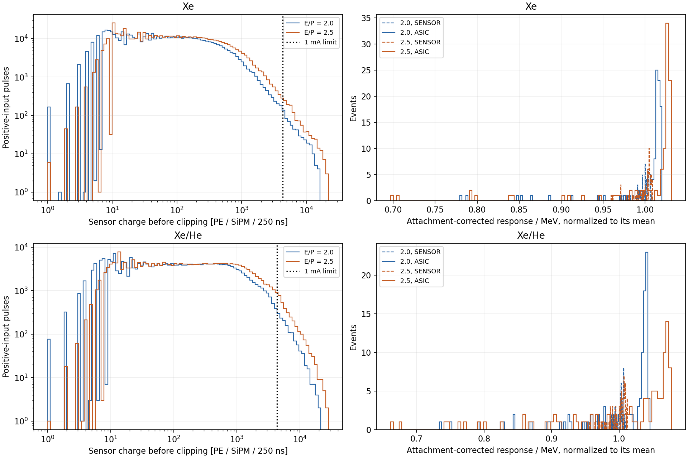
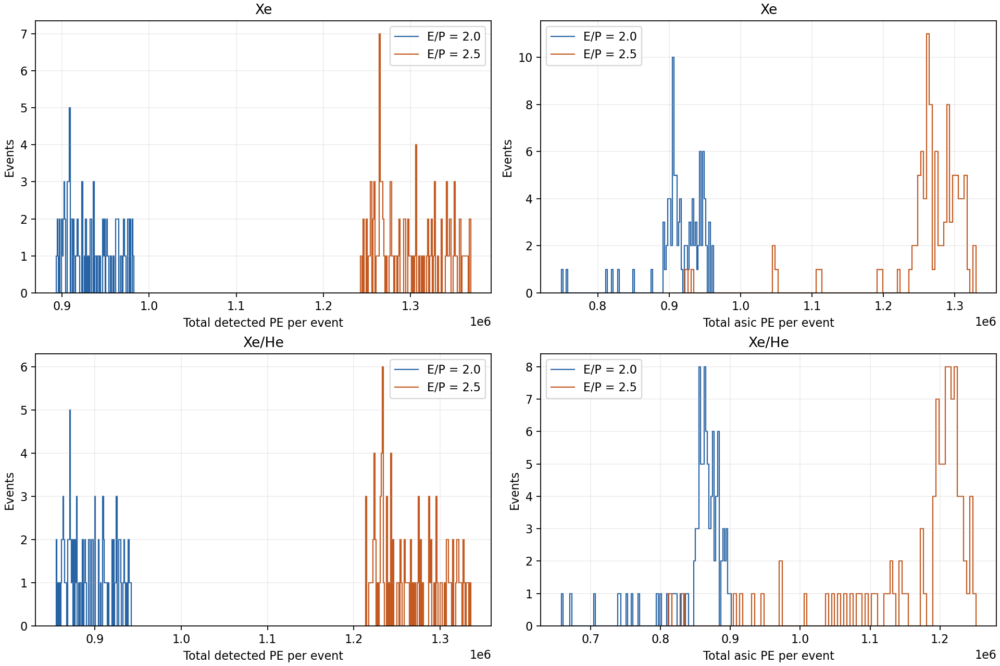

100 matched bb0nu events (IDs 0–99), 1 mm MC stepping, each gas and E/P point; 15 bar, 15% He. Centred 1.3 × 1.3 mm S14160-1315PS at zero gap, 5 mm hole diameter/depth, 10 mm pitch. Uniform isotropic axial EL emission; absorbing surroundings. TPB coats the sensor; complete VUV absorption, intrinsic conversion 0.62, forward fraction 0.5, blue PDE approximated by its 0.32 peak: effective PDE 0.0992. Prompt TPB stays in the parent bucket. 7,284 cells, gain 360,000, dark rate 120 kHz. Provisional recharge 12.5 ns with approved 25 ns sensitivity; uniform microcell illumination and constant PDE during recovery. ASIC: 1 mA, 250 ns, 3.5417 PE RMS (same input charge noise as the previous sensor). J = 0.030 at E/P = 2.0 and 0.015 at 2.5, for both gases. Nominal results use 1024 statistical substeps per 250 ns bucket.
| E/P | Gas | Mean detected PE [million] | Sensor / detected [%] | ASIC charge lost [%] | Events clipping [%] | Positive cells clipping [%] |
|---|---|---|---|---|---|---|
| 2.0 | Xe | 0.933 | 99.43 | 1.284 | 25 | 0.095 |
| 2.0 | Xe/He | 0.895 | 98.70 | 3.367 | 58 | 0.591 |
| 2.5 | Xe | 1.301 | 99.13 | 2.276 | 30 | 0.215 |
| 2.5 | Xe/He | 1.268 | 98.15 | 6.248 | 97 | 1.423 |
Widths are full-distribution RMS/mean. Known attachment is corrected event by event and totals are divided by the deposited MC energy; sensor/ASIC sums have expected stationary dark baseline subtracted. Recovery and clipping remain in the forward response. The detected-PE width isolates optical counting statistics; the sensor and ASIC widths expose nonlinear response. These are not resolutions after a fitted nonlinearity correction. The raw total distributions also include energy deposition and drift variation. Each pulse is one SiPM–250 ns cell. The logarithmic pulse plot displays positive sensor output; zero outputs remain in all event sums and pulse means.
| E/P | Gas | VUV RMS [%] | Detected PE RMS [%] | Sensor RMS [%] | ASIC RMS [%] |
|---|---|---|---|---|---|
| 2.0 | Xe | 0.141 | 0.170 | 0.732 | 4.520 |
| 2.0 | Xe/He | 0.139 | 0.175 | 0.877 | 6.784 |
| 2.5 | Xe | 0.139 | 0.165 | 0.986 | 6.645 |
| 2.5 | Xe/He | 0.141 | 0.169 | 1.212 | 9.804 |


| E/P | Gas | Event-mean PE: mean | Event-mean PE: median | Event-max PE: mean | Event-max PE: median |
|---|---|---|---|---|---|
| 2.0 | Xe | 250.8 | 155.0 | 3412.9 | 2054.6 |
| 2.0 | Xe/He | 493.5 | 351.9 | 6241.6 | 4562.5 |
| 2.5 | Xe | 347.8 | 215.5 | 4679.8 | 2842.0 |
| 2.5 | Xe/He | 693.6 | 495.3 | 8640.5 | 6346.1 |
| Recharge ns / steps | E/P | Gas | ASIC loss [%] | Sensor RMS [%] | ASIC RMS [%] |
|---|---|---|---|---|---|
| 12.5 / 512 | 2.0 | Xe | 1.282 | 0.719 | 4.503 |
| 12.5 / 1024 | 2.0 | Xe | 1.284 | 0.732 | 4.520 |
| 25.0 / 512 | 2.0 | Xe | 1.116 | 1.372 | 4.663 |
| 12.5 / 512 | 2.0 | Xe/He | 3.365 | 0.878 | 6.775 |
| 12.5 / 1024 | 2.0 | Xe/He | 3.367 | 0.877 | 6.784 |
| 25.0 / 512 | 2.0 | Xe/He | 2.932 | 1.670 | 6.853 |
| 12.5 / 512 | 2.5 | Xe | 2.272 | 0.998 | 6.650 |
| 12.5 / 1024 | 2.5 | Xe | 2.276 | 0.986 | 6.645 |
| 25.0 / 512 | 2.5 | Xe | 1.973 | 1.855 | 6.779 |
| 12.5 / 512 | 2.5 | Xe/He | 6.242 | 1.220 | 9.806 |
| 12.5 / 1024 | 2.5 | Xe/He | 6.248 | 1.212 | 9.804 |
| 25.0 / 512 | 2.5 | Xe/He | 5.449 | 2.249 | 9.826 |
| E/P | Gas | Mean sensor change [%] | Clip loss change [percentage points] |
|---|---|---|---|
| 2.0 | Xe | +0.0036 | +0.0012 |
| 2.0 | Xe/He | -0.0012 | +0.0016 |
| 2.5 | Xe | -0.0107 | +0.0039 |
| 2.5 | Xe/He | -0.0090 | +0.0057 |
Figure 19 gives approximately 0.65 at 170 nm and 0.50 at 190 nm; 0.62 is a rounded interpolation near 175 nm. The typical quoted QE uncertainty is about 8% relative. This intrinsic QE is separate from film-dependent external wavelength-shifting efficiency.